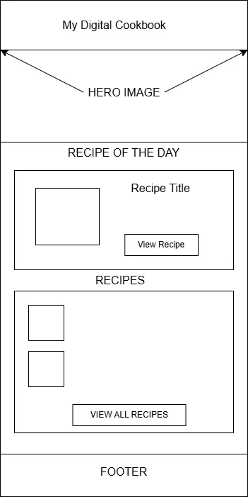
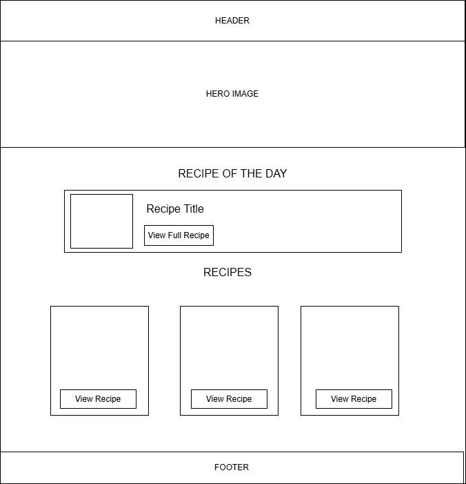

Site Name
Name:My Digital Cookbook
Why I choose it?I chose this subject because cooking is one of my greatest passions, and I want to solve a recurring personal frustration. Currently, I often lose track of my favorite recipes because they are scattered across different sticky notes or loose papers. Building this site will help me eliminate this inconvenience by keeping everything in one organized place
Site Purpose
The site serves as an interactive online personal recipe book designed to organize, store, and display culinary recipes. It allows users to browse a personal collection, receive daily recommendation via a dynamic "Recipe of the Day", and easily input new dishes through a structured form, eliminating physical clutter
Scenarios
- Scenario 1: "I have some unexpected guests coming tonight and I don't know what to cook. Where can I find a quick, recommended recipe recommendation on this site?"
Answer: The user can check the Home Page dashboard, which highlights a dynamic "Recipe of the Day" for instant inspiration. - Scenario 2: "I just invented a great new pasta dish and I don't want to lose the ingredient proportions. How can I save it for the future?"
Answer: The user can navigate to the "Add Recipe" page, fill out the structured HTML form, and submit it to save it directly into their personal collection.
Color Schema
To reflect a warm culinary vibe, the following palette will be used across the site and applied directly to this Site Plan:
Typography
Heading Font: 'Playfair Display' (or Georgia, serif) — Used for h1, h2, h3 to give an elegant, classic cookbook feel.
Body Font: 'Roboto' (or Arial, sans-serif) — Used for paragraphs, lists, and form inputs to ensure high readability and clean UI.
Wireframes (Home Page Layout)
Mobile View

Desktop View
